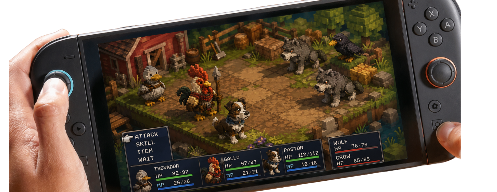

Super Critter Story:
Backyard Legends
Pequenos heróis. Grandes planos.
Rolar
Pequenos heróis. Grandes planos.
Você lidera animais comuns da fazenda como se fossem heróis improváveis: cada um tem função, medo, fraqueza e caminho de evolução.
O Espantalho não é apenas o vilão. Ele é o mistério que transforma cada batalha em uma pergunta: proteger o quintal ainda conta como amor quando vira prisão?
Gameplay sem complicar
Escolha seus companheiros, combine talentos e use o terreno para transformar cada turno em uma pequena história.
Mova seus heróis pelo tabuleiro, use cercas, caminhos e cantos do quintal a seu favor, e encontre aquele movimento esperto que vira a batalha.
O galo segura a linha, a ovelha cuida do grupo, o gato alcança pontos-chave e o pato cruza rotas difíceis. O time certo faz o quintal parecer novo.
O Espantalho guarda mais do que medo. A cada vitória, a fazenda revela uma lembrança, um segredo e um motivo para seguir em frente.
As classes evoluem junto com os personagens. Novos golpes, jeitos de ajudar e escolhas fazem cada animal parecer parte da sua própria turma.
Comunidade
Entre na lista de playtesters e ajude a calibrar dificuldade, ritmo das batalhas e clareza do primeiro capítulo.
Seu primeiro esquadrão
Cada personagem tem função de batalha, conflito interno e uma maneira diferente de virar o jogo.
Progressão
Escolhas de evolução transformam identidade narrativa em função tática dentro da batalha.
"Quem canta a aurora tambem a sustenta."
Sentinela
Arauto Real · Cantor da Aurora
"Ha coragem em quem se recusa a ser apenas comida."
Brutamontes
Encouracado · Curandeiro de Lama
"A sombra nao esconde. Escolhe."
Infiltrador
Assassino das Sombras · Envenenador Fantasma
"A la guarda segredos que a boca nao sabe."
Pastora
Oraculo de La · Tecela de Escudos
"Farejar e lembrar de quem voce foi."
Patrulheiro
Cacador de Presas · Farejador Tatico
"Do alto, a cerca e so uma linha."
Batedor
Bombardeiro d'Agua · Mensageiro Veloz
Playtest e descoberta
Entre na lista para receber novidades do playtest e ajudar o jogo a chegar melhor à Steam, iOS e Android.

Sem demo pública ainda. O CTA leva para uma solicitação de playtest no GitHub.